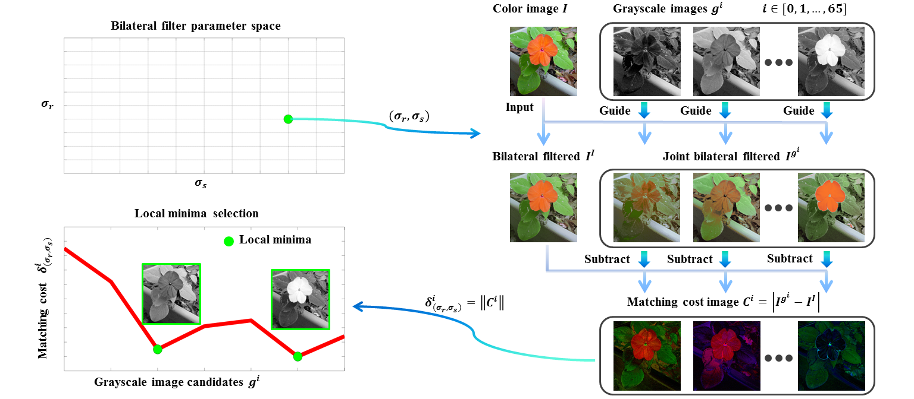

SIGGRAPH Asia 2013, Technical Brief
Decolorization: Is rgb2gray() Out?
Yibing Song Linchao Bao Xiaobin Xu Qingxiong Yang

Spotlight
1. Color contrast preservation using (joint) bilateral filtering.
2. CALL FOR ATTENTION: For decolorization, more focus should be put on the rgb2gray() model (i.e., Grayscale=a*R+b*G+c*B). (All the failure cases of state-of-the-art decolorization methods shown in the second row of the figure can be improved in the third row.)
The proposed pipeline

The bilateral parameter space simulates human visual perception. Each pair of parameter contributes to the quantitative evaluation of color contrast preserving which is the difference of bilateral and joint bilateral filtering results. Local minima is selected through voting.
Downloads
|
Paper
PDF (6.8 MB)
|
Supplementary Materials
PDF (10.8 MB)
|
User Preferred Results
ZIP (1.6 MB)
|
Slides
PPTx (2.9 MB)
|
BibTex (DOI)
@inproceedings{song_siga13_decolor,
author = {Song, Yibing and Bao, Linchao and Xu, Xiaobin and Yang, Qingxiong},
title = {Real-Time Exemplar-Based Face Sketch Synthesis},
booktitle = {SIGGRAPH Asia 2013 Technical Briefs},
pages={15},
year ={2013},
}